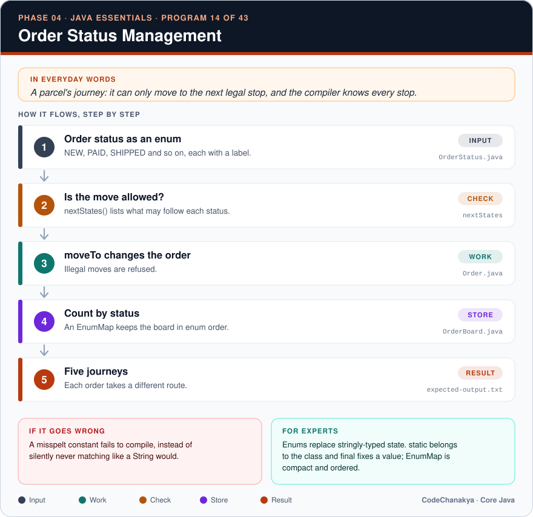

Phase 04 · Java Essentials · Program 14 of 43
Order Status Management
The problem
Program 13 stored an order status as a String, and one wrong letter silently never matched anything.
An enum lists every legal status, carries its own label and rules, and a misspelling stops the program from compiling.
See the flow
The whole program as one picture. Read it top to bottom; the colour of each card says what kind of step it is.


If you are new to coding
A parcel's journey: it can only move to the next legal stop, and the compiler knows every stop.
If you are learning
Follow the numbered cards from top to bottom. Open the file named on each card, run the program, and match its output to the last card.
If you are experienced
Enums replace stringly-typed state. static belongs to the class and final fixes a value; EnumMap is compact and ordered.
Text version of the flow
- Order status as an enum (input): NEW, PAID, SHIPPED and so on, each with a label.
- Is the move allowed? (check): nextStates() lists what may follow each status.
- moveTo changes the order (work): Illegal moves are refused.
- Count by status (store): An EnumMap keeps the board in enum order.
- Five journeys (result): Each order takes a different route.
Read in this order
- 1OrderStatus.javaThe constants and the allowed moves.
- 2Order.javastatic counters and final fields.
- 3OrderBoard.javaA final class with an EnumMap.
The code
package com.codechanakya.orders; import java.util.EnumSet; import java.util.Set; /** * Every state an order can be in, and the moves allowed between them. * * Program 13 kept the status as a String, so a typo like "PAYED" compiled and * silently never matched. An enum is a fixed list of named values: the * compiler knows them all, so a misspelling is an error on the line where you * wrote it, and a switch over an enum can be checked for missing cases. * * An enum is also a class. These constants carry a label and a flag, and the * type has methods like any other. */ public enum OrderStatus { NEW("New", false), PAID("Paid", false), PACKED("Packed", false), SHIPPED("Shipped", false), DELIVERED("Delivered", false), CANCELLED("Cancelled", true), RETURNED("Returned", true); private final String label; private final boolean finished; // Constructors of an enum are always private; you never call them yourself. // Java runs this once for each constant above, when the enum is first used. OrderStatus(String label, boolean finished) { this.label = label; this.finished = finished; } public String getLabel() { return label; } /** True for states an order can never leave. */ public boolean isFinished() { return finished; } /** * The states this one may move to. The rules live here, next to the * values, so they cannot drift apart from them. * * The switch has no default branch on purpose: if someone adds a new * constant and forgets to handle it here, this stops compiling. * EnumSet is a set built for enum values (Phase 5 covers sets). */ public Set<OrderStatus> nextStates() { return switch (this) { case NEW -> EnumSet.of(PAID, CANCELLED); case PAID -> EnumSet.of(PACKED, CANCELLED); case PACKED -> EnumSet.of(SHIPPED); case SHIPPED -> EnumSet.of(DELIVERED); case DELIVERED -> EnumSet.of(RETURNED); case CANCELLED, RETURNED -> EnumSet.noneOf(OrderStatus.class); }; } public boolean canMoveTo(OrderStatus next) { return nextStates().contains(next); } }
package com.codechanakya.orders; import java.util.ArrayList; /** * One customer order and the path it has taken through its statuses. * * Three keywords from this phase appear here: * final a value that is set once and never changes * static belongs to the class itself, not to any one order * enum the status is an OrderStatus, never free text */ public class Order { // A constant: static (one copy for the whole class) and final (never reassigned). public static final String ID_PREFIX = "ORD-"; // static state is shared by every Order. Each new order takes the next number. private static int nextNumber = 7001; private static int createdCount = 0; private final String id; private final String customer; private OrderStatus status = OrderStatus.NEW; private final ArrayList<OrderStatus> path = new ArrayList<>(); public Order(String customer) { this.id = ID_PREFIX + nextNumber; this.customer = customer; nextNumber++; createdCount++; path.add(status); } /** How many orders have been created since the program started. Called as Order.totalCreated(). */ public static int totalCreated() { return createdCount; } /** * Moves the order to a new status if the rules allow it. * Returns false, and changes nothing, when the move is not allowed. */ public boolean moveTo(OrderStatus next) { if (!status.canMoveTo(next)) { return false; } status = next; path.add(next); return true; } /** The journey so far, for example "New > Paid > Packed". */ public String pathText() { StringBuilder text = new StringBuilder(); for (OrderStatus step : path) { if (text.length() > 0) { text.append(" > "); } text.append(step.getLabel()); } return text.toString(); } public String getId() { return id; } public String getCustomer() { return customer; } public OrderStatus getStatus() { return status; } }
Only the key files are shown. The rest are in the repository.
Run it
$ ./run.sh --check
Ship a NEW order straight away: refused
Pay it first instead: done
Pay a RETURNED order: refused
--- Journeys ---
ORD-7001 Asha Menon New > Paid > Packed > Shipped > Delivered
ORD-7002 Rahul Verma New > Paid > Cancelled
ORD-7003 Meera Iyer New > Paid
ORD-7004 Kiran Rao New > Paid > Packed > Shipped > Delivered > Returned
ORD-7005 Dev Patel New
Orders created: 5
--- Orders by status ---
New 1
Paid 1
Packed 0
Shipped 0
Delivered 1
Cancelled 1
Returned 1
--- What can SHIPPED become? ---
[DELIVERED]
Finished states:
CANCELLED (position 5)
RETURNED (position 6)
Parsing text from outside the program:
"SHIPPED" -> SHIPPED
"PAYED" is not a status: No enum constant com.codechanakya.orders.OrderStatus.PAYED
OK: output matches expected-output.txt
This is the real output from OpenJDK 21.0.13 on Linux. It has not yet been run on Java 25, Windows or macOS.
Try it yourself
- BeginnerAdd a REFUNDED status.
- BeginnerAdd isFinished() to Order.
- BeginnerPrint every status with its position.
- IntermediateAdd countFinished() to OrderBoard.
- IntermediateAdd OrderStatus.fromText().
- ChallengeAdd a ShippingSpeed enum with a body per constant.
Hints and solutions are in the exercises and solutions folders. Try first.
Break it on purpose
Three files: a misspelt constant, a switch that misses a case, and a static method reading an instance field. The README in the broken folder explains each one.